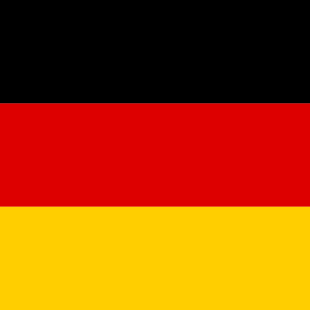
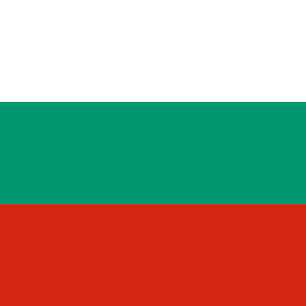
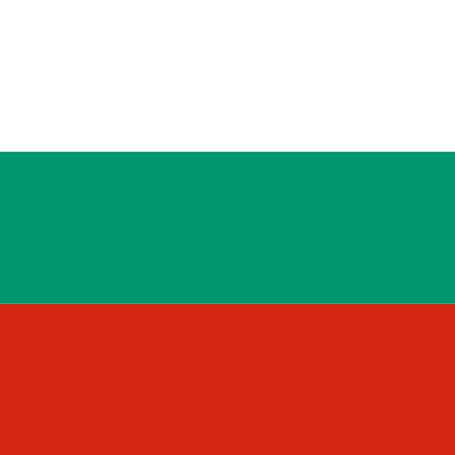
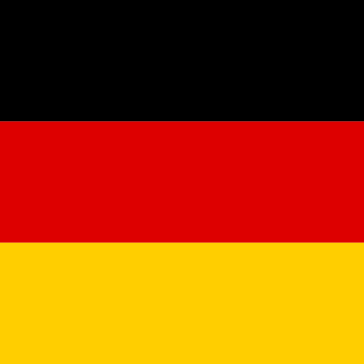
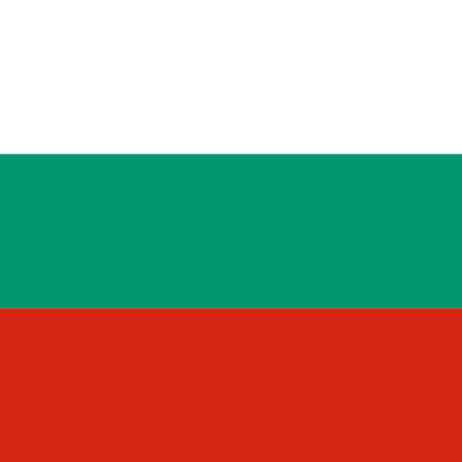

Previous education
- 73. High School Vladislav Gramatik
- Web-Development course
- Language lessons in:
| German  | English  | Russian
| Russian  | Bulgarian /Native/

| Bulgarian /Native/

Teodor Ivanov
| German  | English | Russian | Bulgarian /Native/

Teodor Ivanov